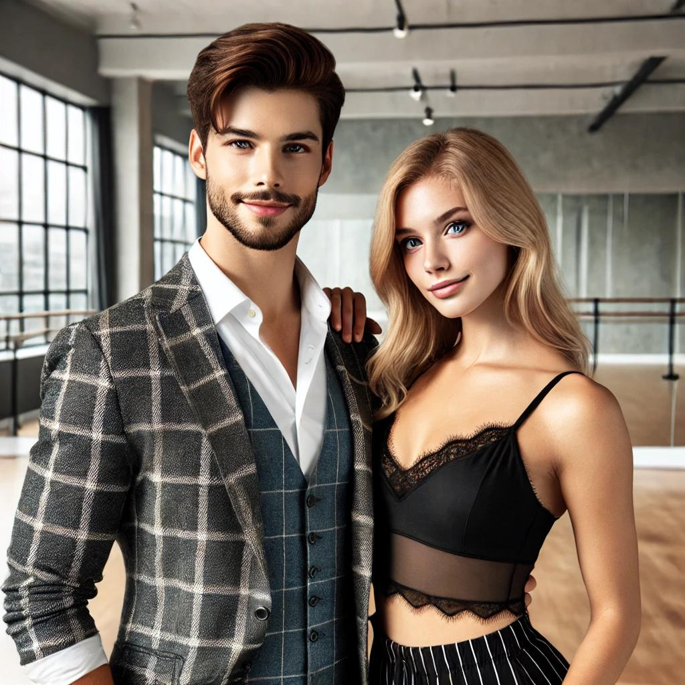

Про нас

Хто ми?
Ми - професійні викладачі танців, які допомагають людям відкривати світ руху та ритму. Наші інструктори мають багаторічний досвід у різних стилях танцю та з радістю діляться своїми знаннями.
Наші викладачі
Олександр – експерт у соціальних танцях, таких як сальса, бачата та аргентинське танго. Його методика дозволяє кожному почуватися впевнено на танцмайданчику.
Анна – спеціалістка з сучасного та класичного танцю. Вона допомагає студентам розвинути гнучкість, координацію та виразність рухів.
Наша місія
Ми прагнемо зробити танці доступними для всіх, незалежно від рівня підготовки. Наша мета – навчити вас танцювати із задоволенням та впевненістю.
Чому обирають нас?
- Досвідчені викладачі з професійним підходом.
- Індивідуальний підхід до кожного учня.
- Зручні онлайн-уроки та живі заняття.
- Дружня атмосфера та підтримка.